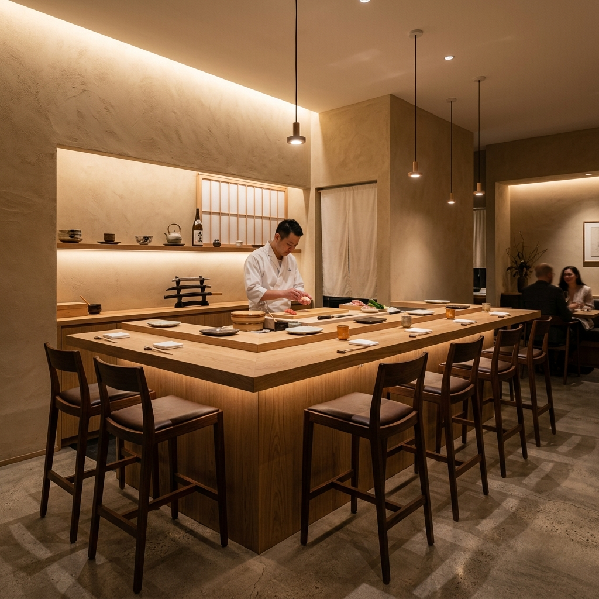

120H
숙성의 온도와 정성
OUR PHILOSOPHY
예술에 가까운 숙성, 오직 부센동에서만
부산에서 가장 먼저 독자적인 프리미엄 카이센동을 정착시켜 온 부센동은 단지 화려하게 올린 비주얼만을 추구하지 않습니다. 우리의 철학은 해산물 한 점 한 점이 가진 본래의 잠재적인 감칠맛을 최대로 끌어올리는 엄격한 숙성 과정에 있습니다. 30년 전통의 수제 숙성 기법을 정교하게 재해석해 완성한 특제 간장과 정성이 깃든 한 그릇을 선사합니다.
1차 저온 완숙성 (24 Hours)
잡내를 깔끔하게 다스리고 생선 본유의 단단하고 쫀쫀한 육질 구조를 잡는 미학적 기초 숙성 단계.
2차 심도 초숙성 (96 Hours)
부센동만의 독자적인 해수 빙결 저온고에서 아미노산을 극대화하여 혀끝에 감기는 부드러움과 단맛을 고조시키는 단계.
특제 수제 간장 & 배합 밥
보리와 가쓰오부시를 이용해 염도를 줄이고 깊은 바다 향을 담아 직접 끓여낸 특제 간장과 고슬고슬한 쌀밥의 완벽한 앙상블.